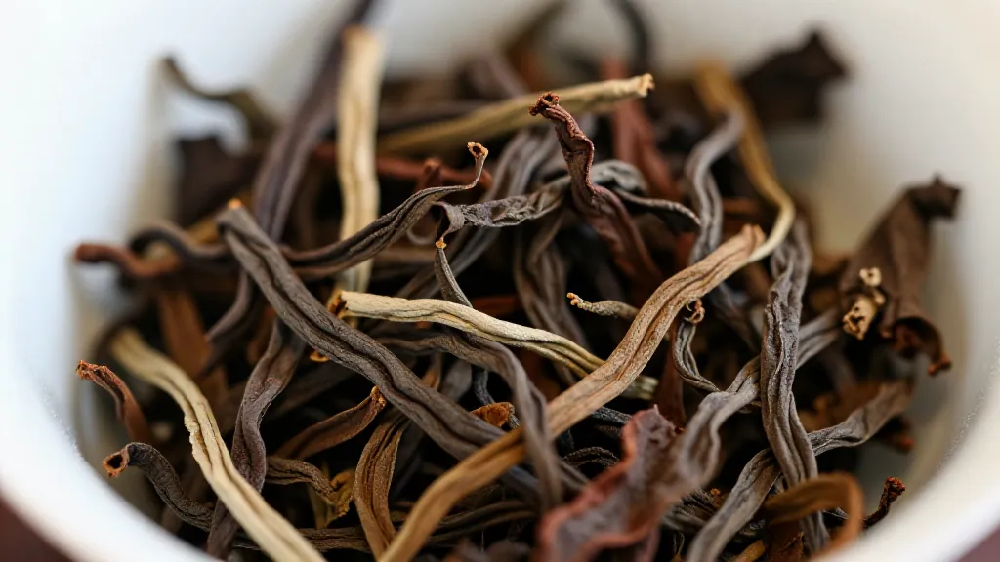

开篇回答：凤凰单丛有哪些品种？蜜兰香、鸭屎香、黄枝香、芝兰香……哪个最适合你？看完这篇就懂了！
🌿 晚上，店里来了姚老师、陈老板，还有李叔和小美。
我拿出茶罐，给大家泡茶。姚老师问："凤凰单丛品种那么多，到底有什么区别？"
我笑着说："来，我给你们讲讲我这些年卖茶的经验~"
📌 蜜兰香——新手入门首选
"我先泡了一壶蜜兰香，这是蜜兰香，我店里最畅销的！"
"蜂蜜甜香加兰花香，入口绵柔，几乎无苦涩。回甘持久，能泡18泡以上~"
"新手入门首选，很多客人第一次来我都推荐这个~"
📌 鸭屎香——年轻人的最爱
"这个叫鸭屎香，名字怪，但真的香！"
"为什么叫鸭屎香？其实是叫'银花香'，因为种在'鸭屎土'里才得名"
"香气高扬清爽，回甘特别快，年轻人最爱~"
📌 其他品种推荐
- 黄枝香：喜欢清香选这个，干净明亮
- 芝兰香：老茶客喜欢，越泡越香
- 桂花香：浓郁甜蜜，秋天喝最有味道
- 通天香：香气极高，一泡满屋香
- 老枞水仙：能泡20泡以上，资深茶客追求
- 锯朵仔：杏仁香加奶香，有个性
☕ 姚老师感叹："原来有这么多品种！" 陈老板问："那我该怎么选？"
我笑着说："要甜润顺口选蜜兰香，要高香清爽选鸭屎香，要老茶韵味选老枞水仙~"
📌 FAQ 常见问题
Q：凤凰单丛有多少种品种？
A：100多种，最常见有蜜兰香、鸭屎香、黄枝香、芝兰香等
Q：新手适合喝哪种？
A：蜜兰香，甜润顺口，几乎无苦涩
Q：想要高香选哪种？
A：鸭屎香，香气高扬，回甘快
Q：想要老茶韵味选哪种？
A：老枞水仙，醇厚如米汤，喉韵极深